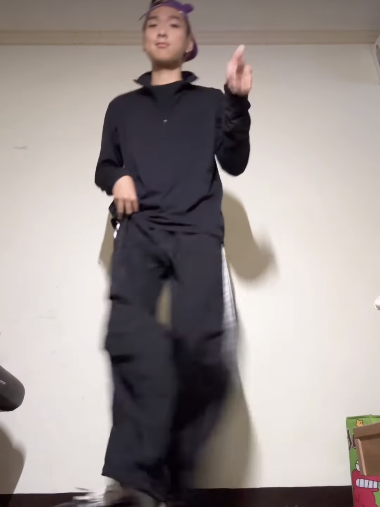

把流量交給演算法，把時間交給自己
他以自律拍片、健身與學日文，累積粉絲與收入，也慢慢把生活過成自己想要的樣子。
「我不是天生就會拍，也不是一開始就有人看。」翰賓笑說，真正改變的是**自律**——每天固定腳本、拍攝、剪輯，從 0 到 1 的那段路，他靠的是一次又一次把平凡的日常打磨成有節奏的內容。
他把一天拆成幾個模塊：**晨間運動**啟動代謝，讓鏡頭前的狀態更穩；**語言練習**固定 30–45 分鐘，日文從五十音到實用句慢慢累積；**內容製作**則有清楚的清單——腳本→拍攝→剪輯→上傳→互動回覆，每一步都可被追蹤。
「我要求自己，就算今天拍得不完美，也要留下『可交代的成果』。」
他不把自律當成枷鎖，而是一種**自由的交換**：先把該做的做完，剩下的時間才是純粹的享受。「很多人以為創作很隨性，我覺得**隨性要有底氣**，而底氣來自長期的紀律。」
健身成為他對抗怠惰的錨點。「很多次想偷懶的時候，我會先去健身房。流汗後，心情更清楚，拍片也更到位。」語言學習則像是給自己的第二條路，「我喜歡學日文，因為那是我給未來的投資。」
「流量不一定會回來，但**習慣一定會回報你**。」
談到粉絲與收入，他很坦白：「賺錢很好，但我更怕失去節奏。只要我還在**每天安排而不是被推著走**，我就知道自己沒有偏離。」
- 固定產出：腳本→拍攝→剪輯→上傳→互動，每天都要留下成果。
- 自律三支柱：健身×學日文×內容創作，彼此強化不內耗。
- 先做再放鬆：把快樂留在「完成之後」，讓休息不帶罪惡感。
- 以週為單位：每週回顧數據與內容手感，調整下週腳本方向。

左：拍攝日常 ｜ 右：跳舞學習
我們問他，如果讓你用一句話送給正在卡關的人？他想了想：「**先讓今天可交代**。」不用完美，不用爆紅，但要有進度、有紀錄、有下一步。「當你能掌控一日，就能掌控一週；能掌控一週，慢慢就能掌控你想要的人生。」
「演算法決定誰被看見；但**自律決定你能走多久**。」